Ce este sistemul circulator?
Sistemul circulator este o componentă esențială a corpului uman, susținând viața și menținând echilibrul intern. Acest sistem asigură transportul continuu al substanțelor necesare funcției celulare, cum ar fi oxigenul și nutrienții, precum și eliminarea deșeurilor din procesele metabolice. Este necesar să se examineze în detaliu principalele componente ale sistemului circulator, cum ar fi inima, vasele de sânge și vasele limfatice, pentru a înțelege semnificația și modul în care funcționează. Abordăm subiecte precum funcția celulelor roșii din sânge, grupele de sânge și modul în care toate aceste componente lucrează împreună pentru a menține sănătatea și echilibrul corpului.
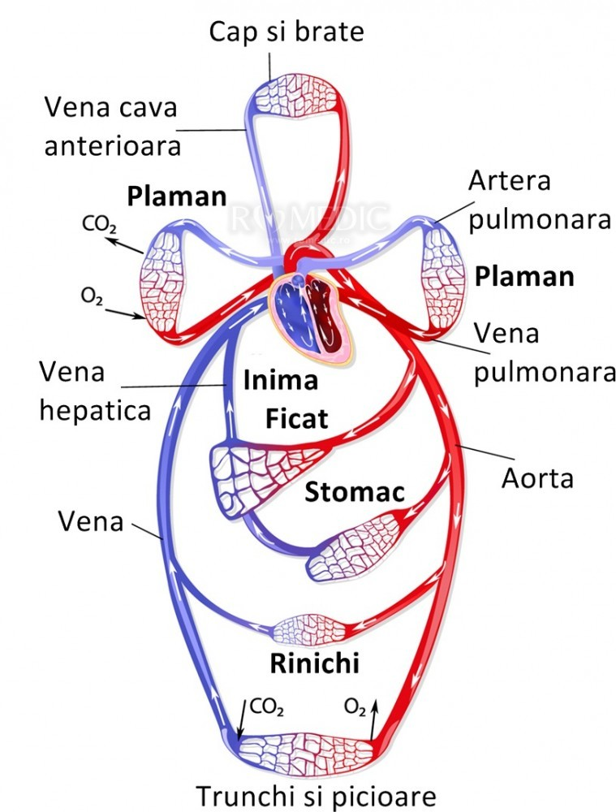
What is the circulatory system?
The circulatory system is an essential component of the human body, supporting life and maintaining internal balance. This system ensures the continuous transport of substances necessary for cellular function, such as oxygen and nutrients, and the elimination of metabolic waste. It is important to examine in detail the main components of the circulatory system—such as the heart, blood vessels, and lymphatic vessels—in order to understand how it functions. We also discuss red blood cells, blood groups, and how all these elements work together to keep the body healthy and balanced.
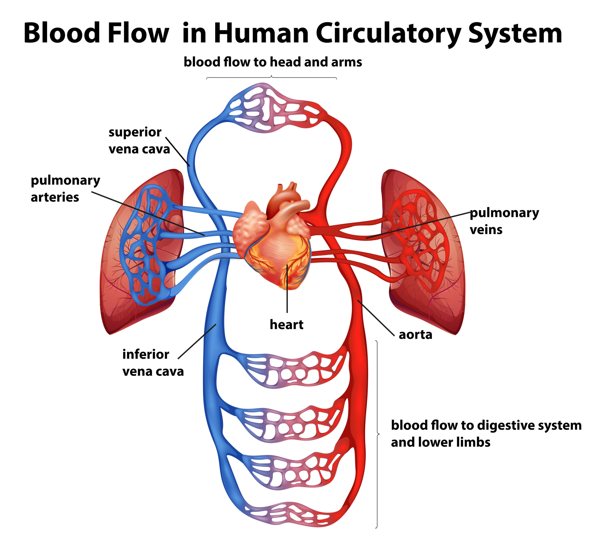
Inima
The Heart
Inima este principalul organ al sistemului circulator situat în partea stângă a cutiei toracice cu vârful sprijinit pe diafragm în formă de pară cu greutatea de 400g, alcătuită din:
- la exterior, un sac protector numit pericard;
- în pereți, un mușchi puternic ce se contractă involuntar și ritmic numit miocard;
- în interior, un spațiu gol împărțit în pereți, care alcătuiesc 4 cămăruțe:
•Sus: 2 atrii, unul drept și unul stâng;
•Jos: 2 ventricule, unul drept și unul stâng;
Inima este un organ muscular, fapt pentru care activitatea ei este caracterizată prin contracții și relaxare, care se succed cu regularitate. Contracția inimii se numește sistolă, iar relaxarea, diastolă. O sistolă, împreună cu o diastolă formează o revoluție cardiacă sau un ciclu cardiac care este realizat în 3 timpi/etape:
I. Sistola atrială (0,1'') în care miocardul se contractă și împinge sângele din atrii în ventriculi prin orificiile atrio-ventriculare în timp ce miocardul ventricular se relaxează.
II. Sistola ventriculară (0,3'') în care mușchiul ventricular se contractă și pompează sânge.
III. Diastola generală (0,4'') în care atât miocardul atriilor cât și al ventriculelor se relaxează, iar sângele se întoarce la inimă prin venele cave și pulmonare în atrii. După umplerea atriilor cu sânge, ciclul cardiac se repetă.
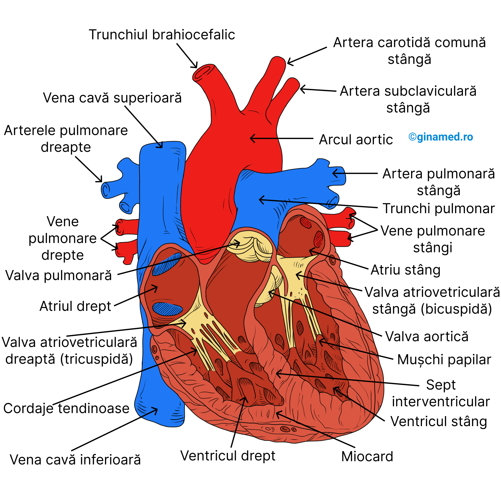
Circulația sângelui prin inimă (simulare video)
Inima pompează sângele în două circuite: spre plămâni pentru oxigenare și spre corp pentru hrănirea celulelor. În această animație este ilustrat traseul sângelui prin inimă.
The heart is the main organ of the circulatory system, located on the left side of the chest cavity, with its tip resting on the diaphragm. It has a pear shape, weighs 400g, and is composed of:
– on the outside, a protective sac called the pericardium;
– in the walls, a strong muscle that contracts involuntarily and rhythmically, called the myocardium;
– on the inside, a hollow space divided by walls, which form 4 small chambers:
•At the top: 2 atria, one right and one left;
•At the bottom: 2 ventricles, one right and one left;
The heart is a muscular organ, which is why its activity is characterized by regular contractions and relaxation. The contraction of the heart is called systole, and the relaxation, diastole. A systole together with a diastole forms a cardiac revolution or a cardiac cycle, which takes place in 3 phases/stages:
I. Atrial systole (0.1'') in which the myocardium contracts and pushes the blood from the atria into the ventricles through the atrioventricular openings, while the ventricular myocardium relaxes.
II. Ventricular systole (0.3'') in which the ventricular muscle contracts and pumps blood.
III. General diastole (0.4'') in which both the atrial and ventricular myocardium relax, and the blood returns to the heart through the venae cavae and pulmonary veins into the atria. After the atria are filled with blood, the cardiac cycle repeats.
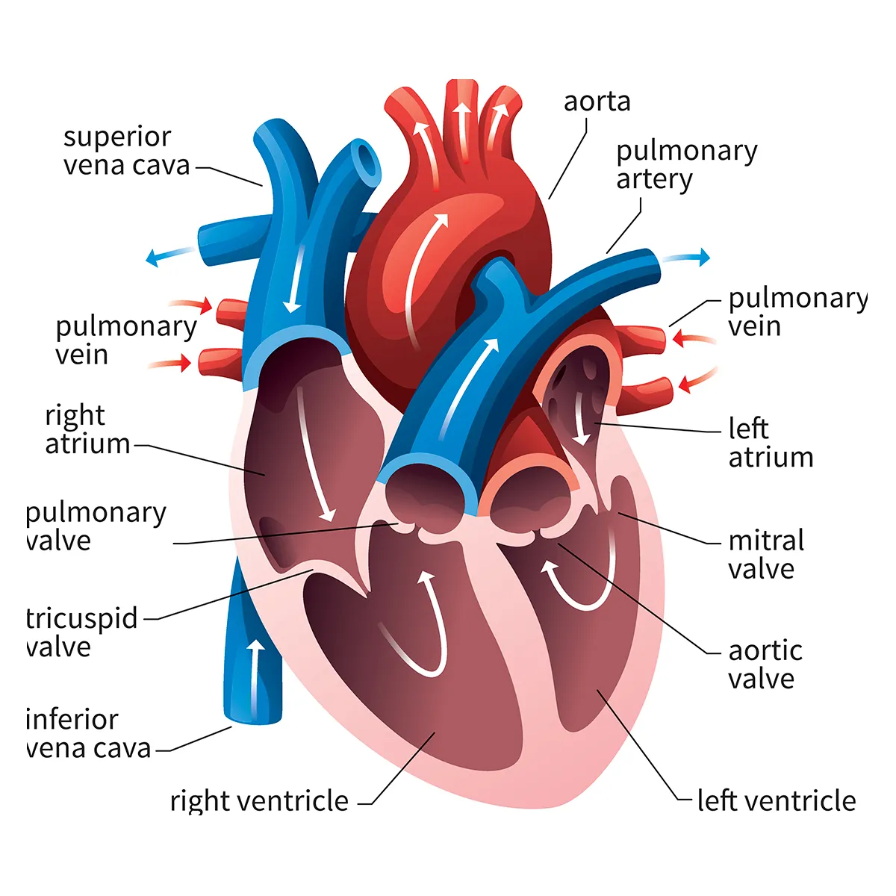
Blood circulation through the heart (video simulation)
The heart pumps blood through two circuits: to the lungs for oxygenation and to the body to nourish the cells. This animation illustrates the path of blood through the heart.
Arterele
Arterele sunt vase de sânge care pleacă de la inimă și transportă sângele către organe. Pereții arterelor conțin mult țesut elastic, ceea ce le permite să suporte presiunea ridicată a sângelui pompat de inimă.
Cele mai mari artere din corp sunt:
1. Artera aortă – pleacă din ventriculul stâng și se ramifică în artere din ce în ce mai mici, care ajung la toate organele corpului.
2. Artera pulmonară – pleacă din ventriculul drept și transportă sângele până la plămân.
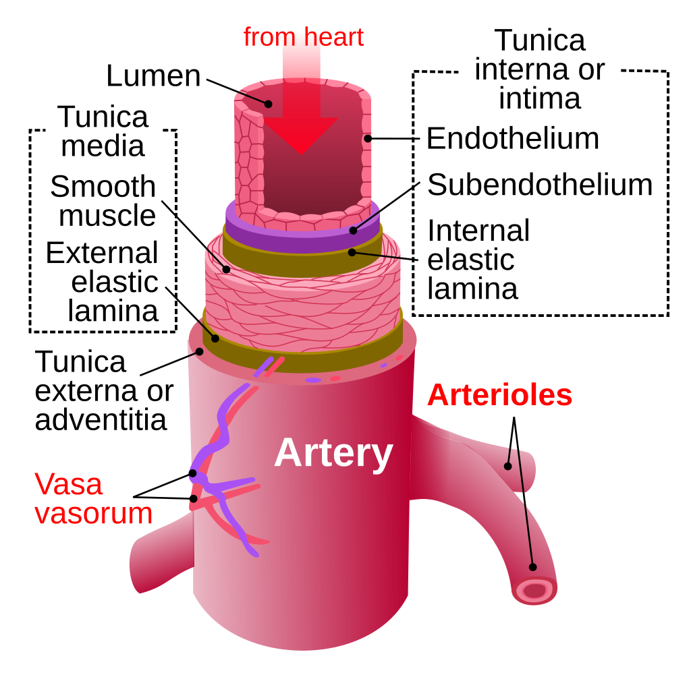
Arteries
Arteries are blood vessels that carry blood away from the heart and deliver it to the organs. The walls of the arteries contain a lot of elastic tissue, which allows them to withstand the high pressure of the blood pumped by the heart.
The largest arteries in the body are:
1. Aorta artery – starts from the left ventricle and branches into smaller and smaller arteries that reach all the organs of the body.
2. Pulmonary artery – starts from the right ventricle and carries the blood to the lungs.
Venele
Venele sunt vase de sânge care transportă sângele de la organe înapoi la inimă. Pereții venelor conțin mai puțin țesut elastic, comparativ cu arterele, deoarece sângele circulă prin ele cu o presiune mai scăzută. Multe vene, mai ales cele din membrele inferioare, conțin valve care împiedică întoarcerea sângelui în sens invers.
Cele mai mari vene din corp sunt:
1. Venele cave – transportă sângele de la organe la inimă. Există 2 vene cave:
•Vena cavă superioară – colectează sângele din partea superioară a corpului.
•Vena cavă inferioară – colectează sângele din partea inferioară a corpului.
2. Venele pulmonare – aduc sângele oxigenat de la plămâni la inimă, în atriul stâng.
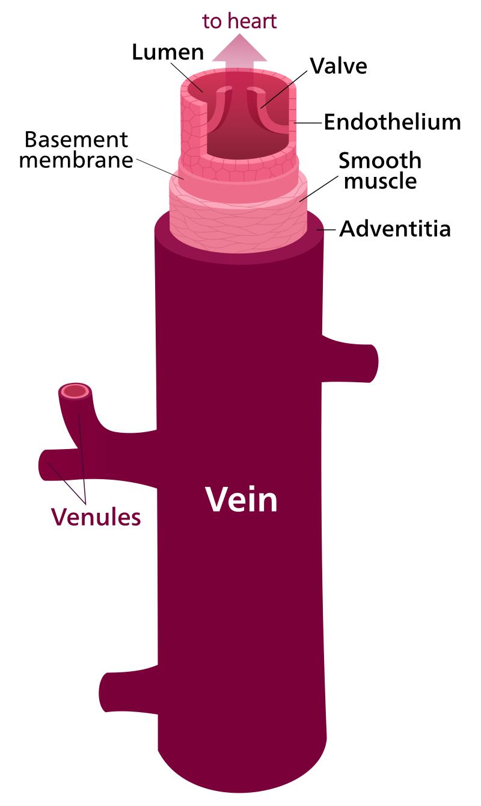
Veins
Veins are blood vessels that carry blood from the organs back to the heart. The walls of veins contain less elastic tissue compared to arteries, because blood flows through them at a lower pressure. Many veins, especially those in the lower limbs, contain valves that prevent the blood from flowing backward.
The largest veins in the body are:
1. Venae cavae – carry blood from the organs to the heart. There are two venae cavae:
•Superior vena cava – collects blood from the upper part of the body.
•Inferior vena cava – collects blood from the lower part of the body.
2. Pulmonary veins – bring oxygenated blood from the lungs to the heart, into the left atrium.
Capilarele
Capillaries
Capilarele sunt cele mai mici vase de sânge (0,5 mm lungime și 30 micrometri în diametru), ce fac legătura dintre arterele și venele mici. Au pereții foarte subțiri, formați dintr-un singur strat de celule. Au un rol foarte important în asigurarea schimbului de substanțe dintre sânge și celule.
Capillaries are the smallest blood vessels (0.5 mm in length and 30 micrometers in diameter), connecting small arteries and veins. They have very thin walls made of a single layer of cells. They play a vital role in the exchange of substances between the blood and the body’s cells.
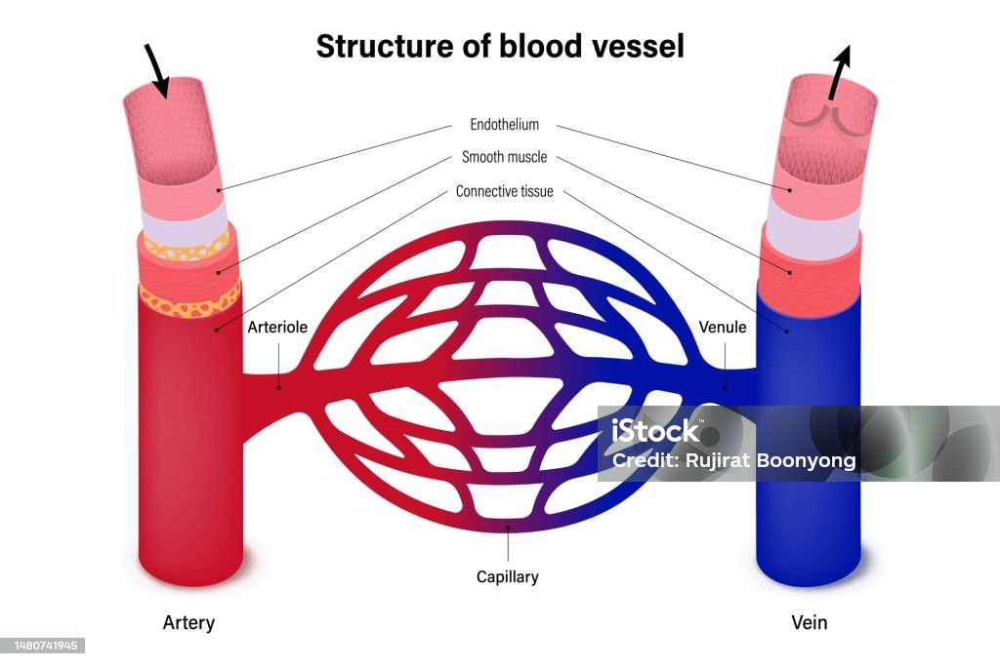
Sângele
Blood
Sângele este principalul lichid al corpului, de culoare roșie, care reprezintă 6–8% din masa corporală, format din plasma sanguină și elementele figurate:
I. Plasma sanguină este partea lichidă ce ocupă 55% din volumul total al sângelui, formată din 90% apă, substanțe anorganice (săruri), dar și organice (proteine, lipide, glucide). În contact cu aerul, ajută la coagulare.
II. Elemente figurate:
a) Celule roșii = HEMATII sau ERITROCITE
Celule roșii fără nucleu (anucleate), cu forma celulară privită din față rotundă, iar din profil de lentilă biconcavă, care trăiesc 120 de zile. Sunt produse în măduva roșie a oaselor late și distruse în splină și ficat. Transportă oxigenul de la plămâni la celule și CO₂ înapoi.
b) Globule albe = LEUCOCITE
Celule incolore care trăiesc de la câteva zile până la câțiva ani. Se produc în măduvă, splină, ganglioni, amigdale. Au rol esențial în imunitate.
c) Trombocite = plachete sanguine
Cele mai mici celule ale sângelui (200.000–400.000/mm³), care trăiesc câteva zile. Ajută la coagulare prin formarea cheagurilor la locul ruperii unui vas.
Lichidul interstițial, numit și limfă interstițială, este prezent între celule și permite schimbul de substanțe necesare metabolismului. Se formează din plasma sanguină care iese din capilare și pătrunde în spațiile celulare.
Limfa, sau sângele alb, se formează din lichidul interstițial în momentul pătrunderii în capilarele limfatice. Are o culoare alb-gălbuie, o compoziție asemănătoare sângelui dar fără celule roșii și cu mai multe leucocite. Circulă prin vase limfatice care se varsă în vene.
Blood is the main fluid of the body, red in color, and represents 6–8% of the body mass. It is composed of blood plasma and formed elements:
I. Blood plasma is the liquid part, representing 55% of the total blood volume. It is made of 90% water, inorganic substances (salts), and organic compounds (proteins, lipids, glucose). When in contact with air, it helps coagulation.
II. Formed elements:
a) Red blood cells = ERYTHROCYTES
Red cell, anucleate, with a round shape when viewed from the front, and a biconcave lens profile when viewed from the side. They live 120 days, are produced in red bone marrow, and destroyed in the spleen and liver. They transport oxygen and bring CO₂ back.
b) White blood cells = LEUKOCYTES
Colorless cells that live from a few days to several years. Produced in marrow, spleen, lymph nodes, and tonsils. They play a key role in immunity.
c) Platelets = thrombocytes
The smallest blood cells (200,000–400,000/mm³), live a few days. They help in clotting by forming clumps at the site of a broken vessel.
Interstitial fluid, also called interstitial lymph, is found between cells and enables the exchange of substances that support metabolism. It forms at the level of capillaries when plasma passes into surrounding tissues.
Lymph, also known as white blood, forms from interstitial fluid when it enters lymphatic capillaries. It is yellowish-white in color and has a composition similar to blood but without red blood cells and with more white cells. It flows through lymphatic vessels which drain into veins. It differs from blood by the absence of erythrocytes.
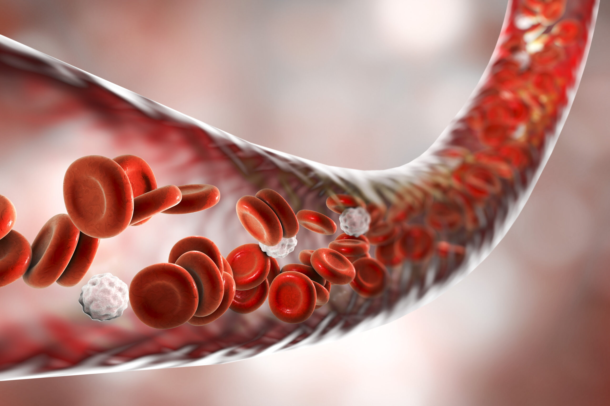
Grupele de sânge
Blood Types
La om există grupe de sânge determinate de prezența pe globulele roșii a unor substanțe numite ANTIGENE și de prezența în plasmă a unor ANTICORPI împotriva acestor antigene. Există 4 grupe:
Grupa 0(I) - nu are antigene A și B și are în plasmă anticorpi anti A și anti B;
Grupa A(II) - are pe hematii antigenul A și are în plasmă anticorpi anti B.
Grupa B(III) - are pe hematii antigenul B și în plasmă anticorp anti A;
Grupa AB(IV) - are pe hematii antigen A și B dar nu are în plasmă anticorpi;
Ca să înțelegem mai bine ce este antigenul și anticorpii le vom defini mai clar.
Antigenul este o substanță, de obicei o proteină sau carbohidră care se află pe celulele roșii, ce determină grupa de sânge. Iar anticorpul este o proteină ce apare în plasmă cu scopul de a identifica și a ataca orice celulă străină.
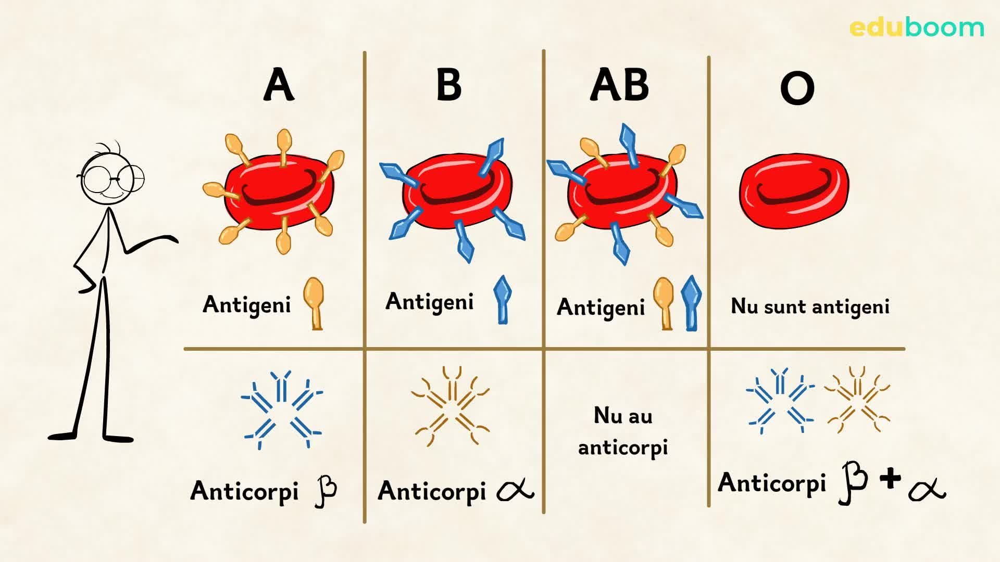
Este important să ne cunoaștem grupa de sânge deoarece în momentul unei transfuzii, primirea unei grupe incompatibile produce lipirea hematiilor printr-o reacție numită aglutinare și blocarea vaselor de sânge, ceea ce duce, în cazuri grave, la deces.
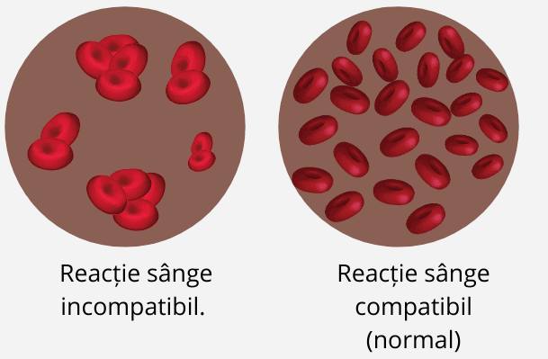
Ce grupă de sânge poți moșteni de la părinții tăi?
La fel ca și culoarea ochilor, grupele de sânge se moștenesc genetic de la părinți.
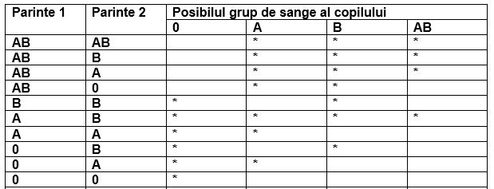
🧪 Simulare: Compatibilitate Transfuzii Sanguine
Selectează grupa pacientului și alegeți donatorii compatibili:
In humans, blood groups are determined by the presence of substances called ANTIGENS on red blood cells and by the presence of ANTIBODIES in the plasma against these antigens. There are 4 blood groups:
Type O - it has no A or B antigens, but its plasma contains anti-A and anti-B antibodies.
Type A - it has A antigens on the red blood cells and anti-B antibodies in the plasma.
Type B - it has B antigens on the red blood cells and anti-A antibodies in the plasma.
Type AB - it has both A and B antigens on the red blood cells and no antibodies in the plasma.
To better understand what antigens and antibodies are, we will define them more clearly.
The Antigen is a substance, usually a protein or a carbohydrate, found on red blood cells that determines the blood type. And antibody it is a protein found in the plasma, whose role is to defend the body by identifying and attacking any foreign cell.
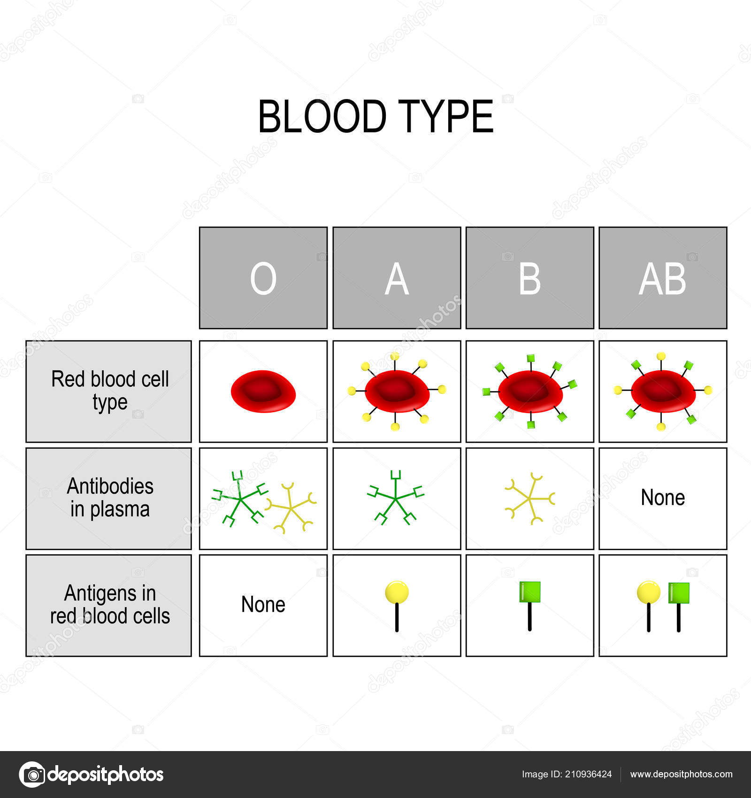
It is important to know our blood type because during a transfusion, receiving an incompatible blood type causes the red blood cells to stick together through a reaction called agglutination, blocking the blood vessels, which can, in severe cases, lead to death.
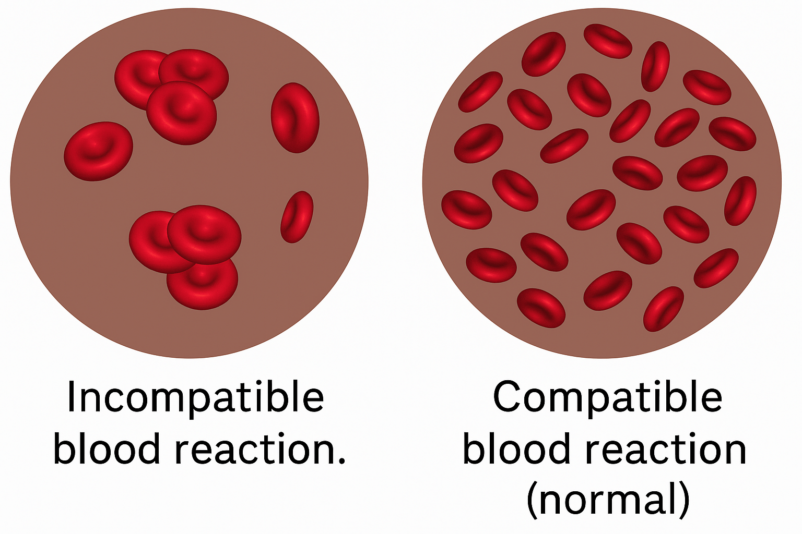
What blood type can you inherit from your parents?
Just like eye color, blood types are inherited genetically from our parents.
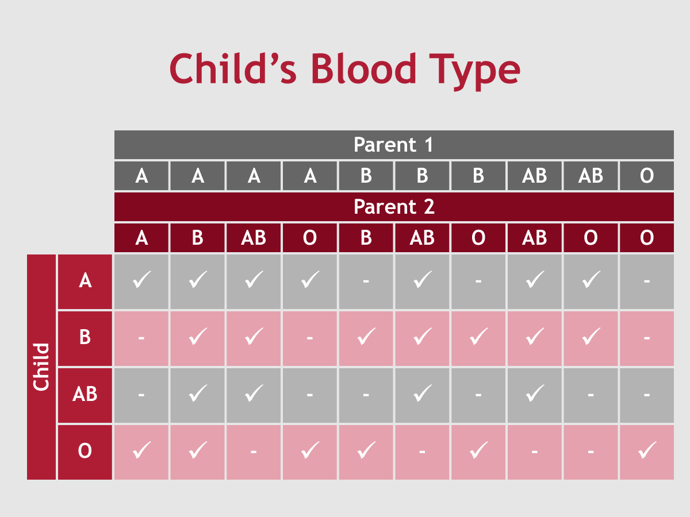
🧪 Simulation: Blood Transfusion Compatibility
Select the patient's blood type and choose compatible donors:
Factorul Rh
The Rh factor
Factorul Rh este o proteină moștenită care se găsește pe suprafața celulelor roșii din sânge. Dacă în sânge se regăsește proteina atunci sunteți Rh pozitiv. Dacă pe suprafața celulelor roșii nu există atunci sunteți Rh negativ.
De ce este important Rh?
Ei bine Rh este important în momentul unei transfuzii deoarece o persoană cu Rh⁺ nu poate primi o transfuzie cu Rh⁻ , deoarece organismul îl va recunoaște ca pe un „străin” și va începe să producă anticorpi împotriva Rh, un proces numit „sensibilizare". Acesta mai este important și în momentul sarcinii deoarece dacă mama are Rh⁻, dar copilul are Rh⁺, mama poate produce anticorpi care luptă cu celulele roșii ale copilului. Acest lucru se poate întâmpla dacă sângele copilului nenăscut ajunge în circulația mamei, ceea ce se întâmplă rar, cel mai des în timpul nașterii.
Atunci când există acest risc (avort spontan, traumatisme abdominale, la naștere), o injecție cu anticorpi anti-D poate fi administrată mamei.
De obicei prima sarcină nu este afectată de compatibilitatea Rh deoarece copilul este adesea născut înainte ca mulți anticorpi să se dezvolte. Dar foarte important este ca la 72h după naștere, mama să facă un vaccin ca să mai poată avea pe viitor încă o sarcină.
Dacă aveți Rh⁺, atunci purtați o genă pozitivă și o genă negativă. Dacă copilul primește două gene negative, atunci el va fi Rh⁻ , fără să apară o problemă. Se estimează că 85% dintre persoane au Rh⁺.
Aflarea Rh este un proces foarte ușor. Necesită doar prelevarea de celule sangvine roșii care sunt amestecate cu o soluție de laborator care conține anticorpi pentru Rh.
The Rh factor is an inherited protein found on the surface of red blood cells. If your blood has the protein, you are Rh positive. If your red blood cells lack the protein, you are Rh negative.
Why is the Rh factor important?
The Rh factor is important during a blood transfusion because a person with Rh⁺ cannot receive Rh⁻ blood. The body will recognize it as “foreign” and begin producing antibodies against the Rh factor, a process called “sensitization". It is also important during pregnancy. If the mother is Rh⁻ and the baby is Rh⁺, the mother’s body can produce antibodies that attack the baby's red blood cells. This can happen if the unborn baby’s blood enters the mother’s bloodstream — something that usually occurs during childbirth.
When there is such a risk (miscarriage, abdominal trauma, or during childbirth), an injection with anti-D antibodies can be given to the mother.
Usually, the first pregnancy is not affected by Rh incompatibility, because the baby is often born before many antibodies develop. However, it is very important that within 72 hours after birth, the mother receives an anti-D injection in order to be able to have another pregnancy in the future.
If you have Rh⁺, it means you carry one positive gene and one negative gene. If the baby inherits two negative genes, they will be Rh⁻, without causing any problems. It is estimated that 85% of people are Rh⁺.
Determining your Rh factor is a very simple process. It only requires a sample of red blood cells, which are mixed with a laboratory solution that contains Rh antibodies.
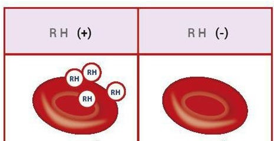
Factorul Rh-nul
The Rh-null Factor
Rh-nul, numit și „golden blood”, este cel mai rar tip de sânge din lume, lipsit complet de antigenii Rh de pe globulele roșii. Au fost identificate mai puțin de 50 de persoane cu acest tip.
Este extrem de valoros pentru transfuzii , deoarece poate fi donat la orice grupă de sânge cu Rh⁺ sau Rh⁻ doar că este păstrat pentru cazurile rare, dar cei care îl au pot primi sânge doar de la un alt Rh-nul, ceea ce devine mai dificil și îi fac să se bazeze pe cooperarea unei rețele mici de donatori Rh-nul din întreaga lume dacă are nevoie.
Factorul Rh-nul pare a fi o mutație genetică, fiind frecvent observată cu mutații în gena RHAG, care codifică glicoproteina asociată Rh-ului. Această mutație este adesea asociată cu o boală numită stomatocitoză ereditară. Persoanele putând avea anemie hemolitică.
Mutația poate apărea prin câțiva factori:
•Căsătorie consanguină - între veri, frați/surori sau rude apropiate, chiar rude îndepărtate
•Genele autozomale (gene anormale care au trăsături de boală transmise în familie)
•Modificări sau ștergere completă a anumitor gene, care sunt RHD și RHCE sau RHAG
Rh-null, also known as “golden blood,” is the rarest blood type in the world. It completely lacks Rh antigens on red blood cells. Fewer than 50 people with this blood type have been identified worldwide.
It is extremely valuable for transfusions because it can be donated to any blood type with Rh⁺ or Rh⁻. However, it is reserved for rare cases. Those who have it can only receive blood from another Rh-null donor, which makes it more difficult and forces them to rely on the cooperation of a small network of Rh-null donors worldwide if needed.
The Rh-null factor appears to be a genetic mutation, frequently observed along with mutations in the RHAG gene, which encodes the Rh-associated glycoprotein. This mutation is often associated with a condition called hereditary stomatocytosis. Affected individuals may have hemolytic anemia.
The mutation can occur due to several factors:
•Consanguineous marriage – between cousins, siblings, or close relatives, even distant relatives.
•Autosomal genes (abnormal genes that carry disease traits inherited within families)
•Alterations or complete deletion of certain genes, such as RHD, RHCE, or RHAG.
Mituri și realități despre sistemul circulator
Myths and Facts about the Circulatory System
🔴 Mit 1: „Inima este în partea stângă a pieptului”
✔ Realitate: Inima este poziționată în partea stângă a pieptului, deși nu complet pe partea stângă cum se crede în mod obișnuit. Acest organ vital este situat în centrul cutiei toracice, ușor înclinat spre stânga, între cei doi plămâni și în spatele sternului. Poziționarea sa specifică permite funcționarea optimă în coordonare cu celelalte organe vitale din cavitatea toracică.
💔 Mit 2: „O inimă frântă e doar o metaforă”
✔ Realitate: Deși pare doar o expresie poetică, „inima frântă” este un fenomen real recunoscut medical. Se numește cardiomiopatie Takotsubo și apare uneori după un șoc emoțional puternic — cum ar fi pierderea unei persoane dragi sau o frică intensă. Inima se contractă anormal, provocând dureri în piept și dificultăți de respirație, simptome care pot semăna cu un infarct. Din fericire, este reversibilă în cele mai multe cazuri.
❤️ Mit 3: „Inima bate mai repede când ești îndrăgostit”
✔ Realitate: Atunci când ne îndrăgostim, corpul eliberează adrenalină, dopamină și alte substanțe care activează sistemul nervos simpatic. Acest lucru determină accelerarea ritmului cardiac, creșterea tensiunii arteriale și senzația de „fluturi în stomac”. Inima răspunde biologic la emoțiile intense, nu la „dragostea” în sine.
💥 Mit 4: „Poți reporni inima lovind pieptul cu pumnul, ca în filme”
✔ Realitate: În filme, vedem personaje care dau un pumn puternic în pieptul unei persoane inconștiente, iar inima „revine la viață”. În realitate, această tehnică (numită precordial thump) este periculoasă și rar folosită. Doar resuscitarea și defibrilarea pot fi eficiente. Lovirea pieptului poate cauza leziuni grave.
💖 Mit 5: „Dacă cineva are o rană gravă, se leagă o bucată de material peste și totul e ok”
✔ Realitate: Personajele din filme aplică o eșarfă pe o rană gravă, o leagă și... gata. În realitate, fără presiune fermă și continuă, sângele nu se oprește. Iar garoul se folosește doar ca ultimă soluție și cu precizie. Folosirea greșită poate duce la amputare.
🔴 Myth 1: “The heart is on the left side of the chest”
✔ Fact: The heart is located on the left side of the chest, although not entirely to the left as commonly believed. This vital organ is situated in the center of the chest cavity, slightly tilted to the left, between the two lungs and behind the sternum. Its specific positioning allows it to function optimally in coordination with the other vital organs in the thoracic cavity.
💔 Myth 2: “A broken heart is just a metaphor”
✔ Fact: Although it sounds poetic, a “broken heart” is a real medical condition known as Takotsubo cardiomyopathy. It can occur after intense emotional stress, such as the loss of a loved one or a traumatic event. The heart’s pumping function becomes temporarily weakened, causing chest pain and shortness of breath — symptoms that resemble a heart attack. Thankfully, most people recover fully.
❤️ Myth 3: “Your heart beats faster when you're in love”
✔ Fact: When we fall in love, the body releases adrenaline, dopamine, and other chemicals that activate the sympathetic nervous system. This leads to a faster heart rate, increased blood pressure, and the sensation of “butterflies in your stomach.” The heart reacts biologically to emotional stimulation, not to love as a feeling.
💥 Myth 4: “You can restart the heart by punching the chest, like in movies”
✔ Fact: In movies, we often see characters deliver a strong punch to the chest of an unconscious person, and the heart “magically” starts beating again. In reality, this technique (called precordial thump) is dangerous and rarely used. Only proper resuscitation and defibrillation can be effective. Punching the chest can cause serious injury and is not recommended.
💖 Myth 5: “If someone has a serious wound, you just tie a piece of cloth around it and everything’s fine”
✔ Fact: In movies, characters tie a scarf or cloth over a serious wound and that’s it. In real life, bleeding won’t stop without strong, continuous pressure. A tourniquet is used only as a last resort, and it must be applied correctly — otherwise, it can cut off circulation and lead to limb damage or even amputation.
Circulația sanguină
Blood Circulation
Prin circulația sanguină înțelegem mișcarea sângelui în interiorul sistemului vascular sanguin.
În circulația sanguină se poate constata existența a două circuite distincte, care pornesc din inimă: circulația mare și circulația mică.
Circulația Mare numită și circulația de nutriție, este drumul pe care îl urmează sângele de la inimă la țesuturi și înapoi. Circuitul începe din ventriculul stâng și se termină în atriul drept. Acesta transportă la organe substanțele nutritive și oxigen. Apoi preia de la ele substanțele de excreție, care urmează să fie eliminate.
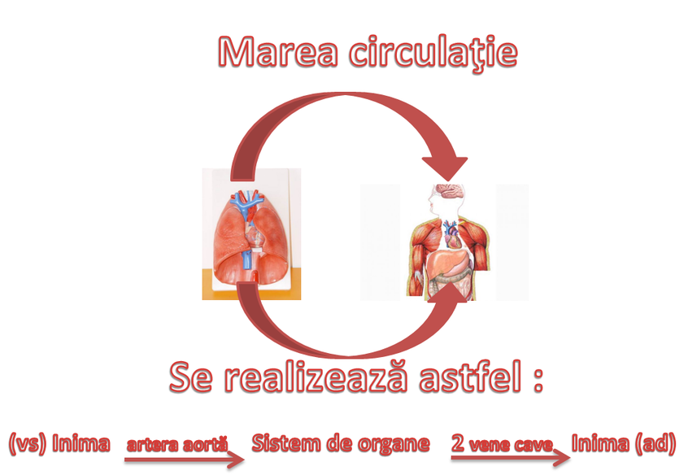
Circulația Mică numită și circulația pulmonară reprezintă drumul pe care îl urmează sângele de la inimă la plămâni și înapoi. Circulația pulmonară începe din ventriculul drept și se termină în atriul stâng.
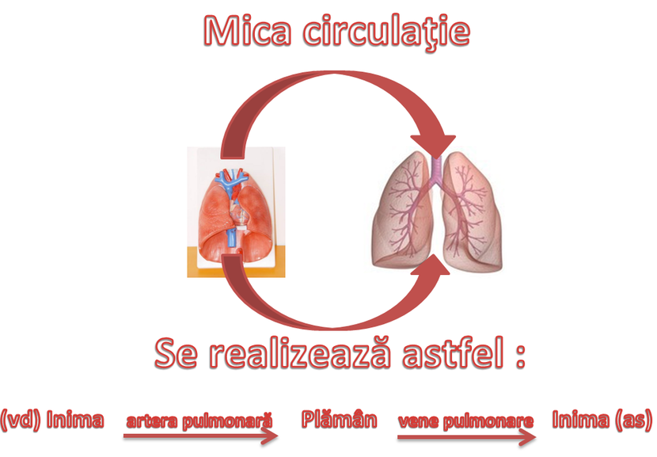
Trebuie remarcat faptul că denumirea de marea și mica circulație se referă la lungimea acestora. Din punct de vedere al cantității sângelui care circulă prin ele, denumirile nu sunt corespunzătoare, pentru că în ambele circuite trece, în același timp, aceeași cantitate de sânge.
Blood circulation refers to the movement of blood within the vascular system.
Blood circulation consists of two distinct circuits that begin in the heart: the systemic circulation and the pulmonary circulation.
Systemic circulation also called the circulation of nutrition, is the pathway through which blood travels from the heart to the tissues and back. The circuit begins in the left ventricle and ends in the right atrium. It delivers oxygen and nutrients to the organs and then collects waste substances that will be eliminated.
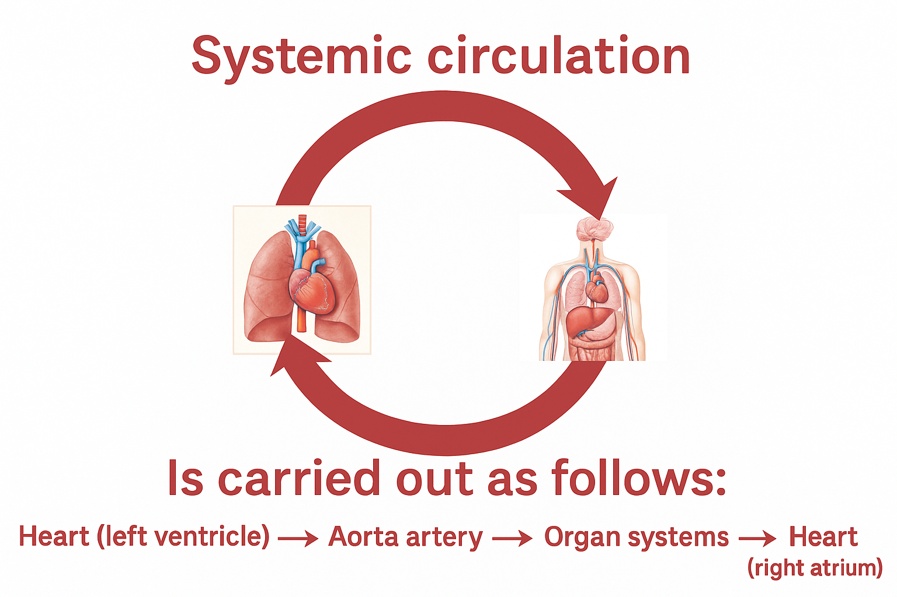
Pulmonary circulation also known as the pulmonary circuit, is the pathway through which blood travels from the heart to the lungs and back. The pulmonary circulation begins in the right ventricle and ends in the left atrium.

It is important to note that the terms “systemic” and “pulmonary” circulation refer to the length of the circuits. From the perspective of the amount of blood passing through them, these names are not entirely accurate, because the same amount of blood flows through both circuits at the same time.